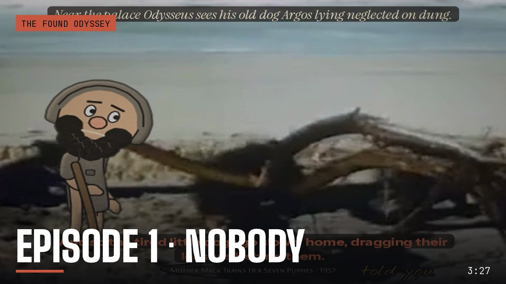
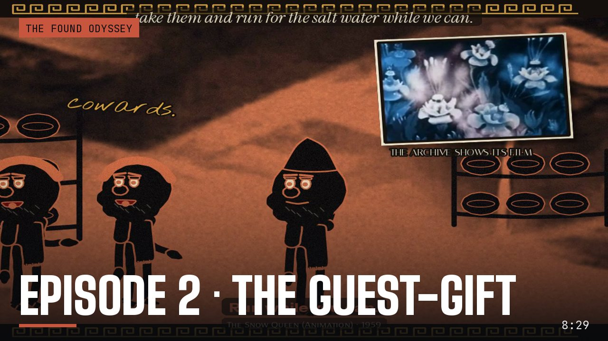
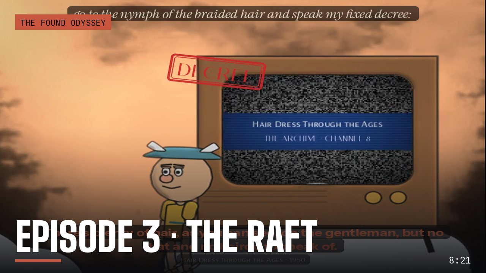
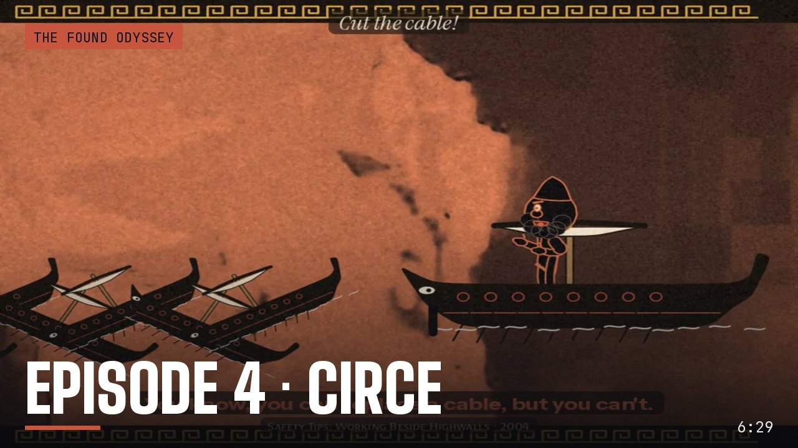

Home / The Found Odyssey / Episode 5 · THE BLOOD
Test ODY-E5 The Found Odyssey
Episode 5 · THE BLOOD
Book 11 in grey, where the only colour is the blood in the trench and whichever shade has drunk it.
- Running time
- 7:34
- Made
- 2026-10-19
- Program
- The Found Odyssey
- File
- mp4, 960 wide, 44 MB
Production notes
THE FOUND ODYSSEY · Episode 5 · THE BLOOD
Book 11 runs as one continuous story, from the trench at Ocean's edge to the shades of Achilles and Ajax. 7 min 35 s, -16 LUFS.
The experiment: the colour rule
The land of the dead is cold black and white. Every plate is graded to grey. The only saturated colour in the film is the blood in the trench, plus whatever has drunk it.
- Shades that have not drunk are drawn grey, half transparent and smeared, like something not quite there.
- A shade that drinks gets its colour and its weight back while the blood is in it. The colour drains out again as it finishes speaking.
- Odysseus, the only living man in the film, is drawn in colour and blended into the grey plates.
The structure carries on from Episode 4. Each scene is built around one line: - the camera goes tight only for that line; - the score goes silent before it; - one held gesture carries the line's meaning; - there are no ink notes and no labels in the frame.
| Part | Sign | The line | The gesture |
|---|---|---|---|
| Cold open · the trench | (none) | "will you do this for me?" | Odysseus kneels and pours, and the blood is the first colour. Elpenor comes first, unburied and grey, carrying his oar. On the line he holds the oar out, handle first. |
| I · Tiresias | Op 34a, Opsign | "keep your hands from those herds." | The blind seer drinks and gets his colour. While he prophesies, the herds of the Sun appear as dark shapes in the fog behind him (Western Cattle Sequence, 1936). The frame closes on Odysseus's feet at the edge of the blood, and he takes one step back. |
| II · the mother | Fe 8, Fetish | "My going killed you, mother." | His hand goes up toward her face and stops short of it, and the frame holds on the gap. Then he tries to hold her three times; each time his arms close through her and she loses more of her colour. |
| III · Agamemnon | Il 10, Index of lack | "she would not even draw down his eyelids" | The king never blinks. Odysseus reaches up and draws his fingers down over the king's eyes, and they stay open. |
| IV · Achilles and Ajax | Ba 41, Bodies of attitude | "the shade answered nothing, and went away in silence among the dead" | The scene is set in a white field. Achilles drinks, and his colour leaves with him when he strides away. Ajax stands apart the whole time and never drinks. On the line he turns away and walks off until the white takes him. |
| After the credits | (none) | (none) | On a tilted grey hillside, Sisyphus's stone gets away from him and rolls back down past him. |
The previously segment uses Episode 4's own line, "To the house of Death?".
Sound
- Each act has its own score, built from the series' lyre motif, quieter under the voices and silent before the line.
- The small sounds belong to the gestures:
- the pouring;
- the crying of the dead;
- drinking;
- air through his arms at each embrace;
- Ajax's footsteps fading as he goes;
- the stone rolling back.
Observed and generated
- Every spoken line comes from the Found Odyssey CALL tracks for Book 11. The words and their order are unchanged; only the selection and the pauses were chosen (
ody/ep5/cut.py). - The answers are The Found Odyssey's matches. The answer after each line plays as a caption, without an inset, so the close-up holds.
- The plates are from the cineosis-lab library, graded to cold black and white:
- The River (1937): the trench and Tiresias;
- Valley Fog (2006): the mother and Sisyphus;
- Stormy Clouds Sequence (2007): Agamemnon;
- Dust Storm (1936): Achilles and Ajax;
- Western Cattle Sequence (1936): the herds.
- Generated: all drawing and animation, the ghost treatment, the score and the sound effects.
- New to the cast, drawn in the same ink renderer: Elpenor's shade, Tiresias, Anticleia, Agamemnon, Achilles, Ajax and Sisyphus.
Files
- Ghost and colour layer:
ody/ep5/craft5.py(built onody/ep4/craft.py). - Scenes:
ody/ep5/s_*.py. - Title, cards, credits and assembly:
ody/ep5/furn5.py. - Rig worlds:
crash/m_e5*.js.
More from The Found Odyssey

Episode 1 · NOBODYBook 9 in three minutes: a prompt box asks for the hero's name, the archive asks for "our young friend's", and Odysseus answers "Nobody."
Episode 2 · THE GUEST-GIFTThe Cyclops again, as a flashback at the Phaeacian feast, told by two tellers who remember it differently. The experiment: the recollection-image.
Episode 3 · THE RAFTBook 5 as one story, each act seen from the point of view of whoever is watching it: the gods on their television, Calypso, Poseidon, the sea.
Episode 4 · CIRCEBook 10 re-cut around one line per scene, the place where power shifts: the Laestrygonians, Circe, and the order to sail to the house of Death.